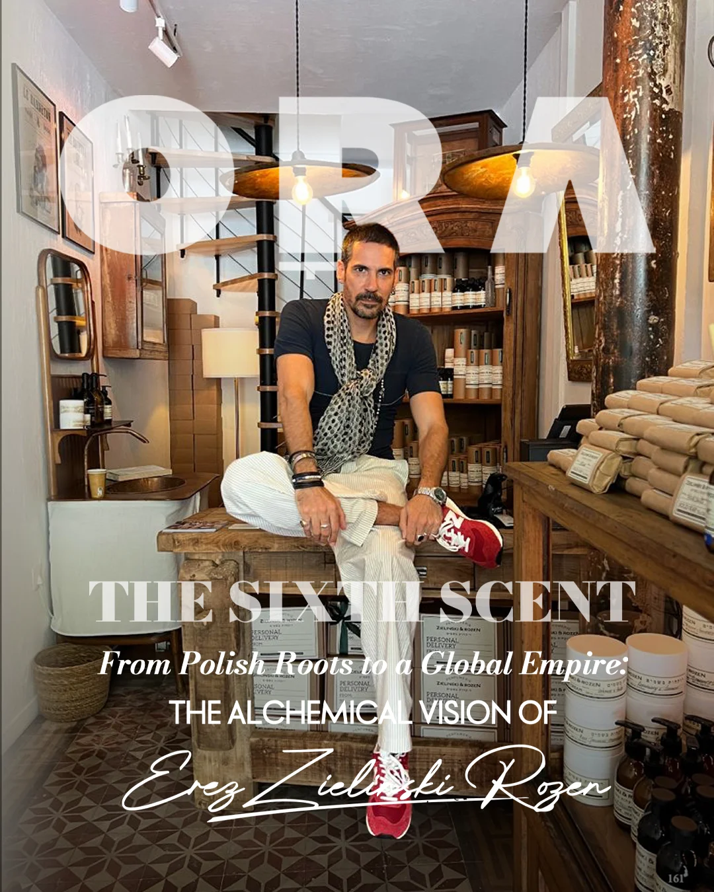
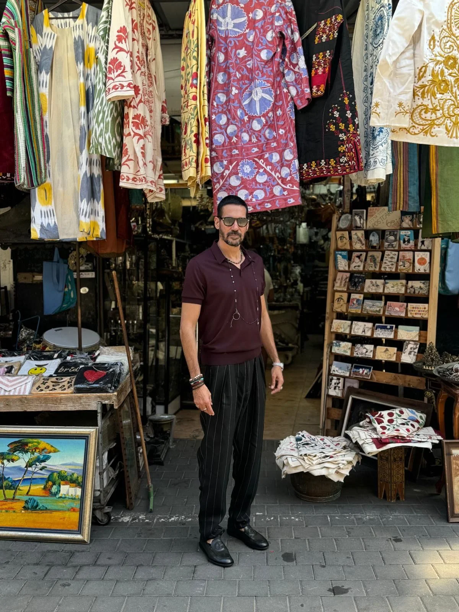
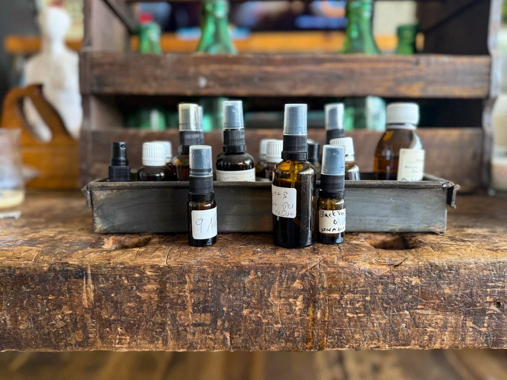
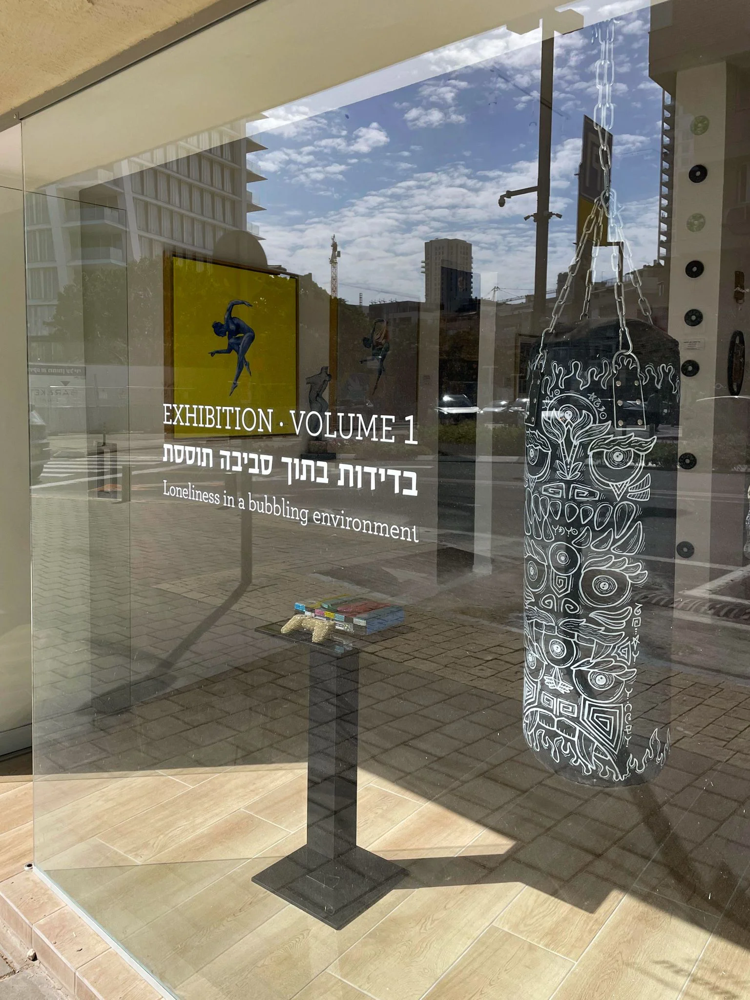
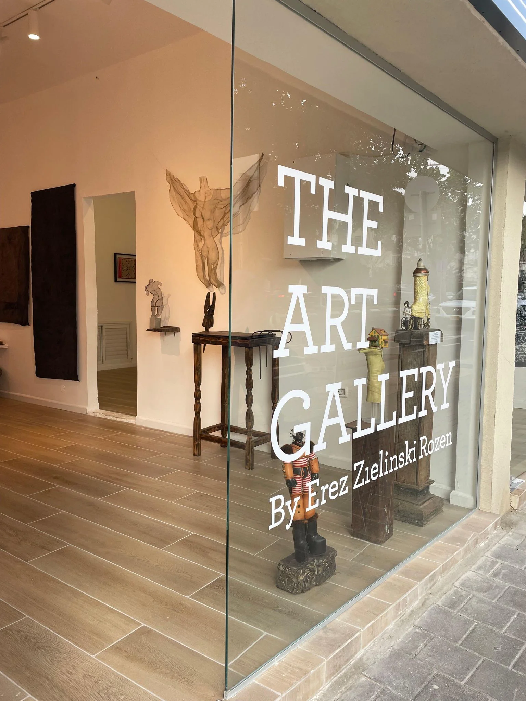

the sixth scent
from polish roots to a global empire:
the alchemical vision of erez zielinski rozen

the art of perfumery: inside erez zielinski rozen's world of scent, legacy, and beauty
Your great-grandfather built something in Jaffa in 1905. When you opened that vault of formulas, what did it smell like and what did it feel like?
My great grandfather, Abraham Zielinski, was not in Jaffa. He was a perfumer in Poland.
Years later I found a small notebook that belonged to him at my parents' house, among my mother's family belongings. Inside there was very little writing, but there were several perfume formulas he had written.
Even that small fragment was enough to spark something in me. It did not feel like discovering a business or a brand that I had to continue. It felt more like finding a trace of a life that once existed.
That discovery stayed with me for many years and eventually led me to begin creating fragrances myself.

The name Zielinski is an Eastern European Jewish name. What's the family history behind it and why was it important to carry it forward?
The name Zielinski comes from my mother's family. They were originally from Poland and arrived in Israel after the war.
My father's family name is Rozen.
When my wife Lea and I created the brand, combining the two names felt natural. It was not a marketing decision. It was simply a way to bring both sides of my family story into the work that I do.
Most founders build brands. You inherited one that was dormant for generations. How do you honor something without being imprisoned by it?
I do not feel that I inherited a brand. What I inherited was a spark.
The notebook was not a blueprint. It did not tell me what to do. It simply reminded me that someone in my family had once lived a life connected to scent.
Everything that came after is my own journey. I work intuitively. I do not follow trends and I never try to recreate the past.
For me honoring the past means continuing to create, not repeating what already existed.

You say a fragrance is like a personal biography. What does your biography smell like?
It changes all the time.
I do not believe a life can be reduced to one scent. Some days it might be something warm and spicy like black pepper and wood. Another day it could be something completely different.
Every fragrance I create reflects a moment in time. A mood, a memory, a feeling.
My biography is not a single perfume. It is a constant movement.
Every ingredient you use comes from somewhere you've traveled or someone you've met. Can you give me an example: a scent and the moment behind it?
For me a fragrance never begins with an ingredient. It always begins with a feeling or with a story. The ingredients come later. They are simply the language I use to tell it.
I once spent twenty four hours in Paris that stayed with me in a very unusual way. Paris has that quality. The city itself feels like a stage where life becomes slightly more intense, almost cinematic.
That day felt almost surreal, as if an entire chapter of life unfolded inside a single day.
The morning carried a feeling of surrender. Elegance, drama, determination and a sense of quiet luxury. That emotion later became Pourquoi Pas?
The middle of the day stretched into the warm Paris evening. Something magnetic about it. Seductive, intriguing, almost like an enigma slowly revealing itself. That became Until Ten…
And everything that followed felt deeply personal. Full of excitement and unpredictability. Like a story that is too improbable to invent. That became Based on a True Story.
Some moments in life resist explanation. They stay with you as atmosphere, as emotion. That day in Paris was one of them. The only honest thing I could do was leave the story inside the fragrances.
All your fragrances are unisex. Was that a philosophical decision?
Not really. It felt natural to me.
When I smell something beautiful I do not think about whether it belongs to a man or a woman. A fragrance belongs to whoever connects with it.
For me scent is about emotion and identity, not gender.
You live outside the city but go to the Jaffa store every day. What does Jaffa give you that you can't get anywhere else?
I do not go there every day.
But the flea market is where everything began for us. Our first store opened there sixteen years ago and it still represents the spirit of the brand.
What I love about that place is its imperfection. It is noisy, chaotic and full of different cultures and languages. That kind of environment feeds creativity.
Our fragrances were born in that atmosphere.
Your great-grandfather built his pharmacy there over a century ago. Do you feel him when you walk those streets?
My great grandfather actually lived and worked in Poland, not in Jaffa.
But there is something poetic about the fact that the journey of our brand began in a place like the flea market. It is a place full of history, layers and different stories.
In a way it feels like a continuation of something much older.
You and your wife Lea run this together. What does she understand about the work that no one else does?
Lea understands the structure behind the creativity.
I work very intuitively and sometimes chaotically. She brings clarity and structure to the entire operation. She is the CEO of the company and manages the whole organization.
Without her the ideas might remain ideas. Together we built the world that allows them to exist.
You have three daughters. Are any of them already learning the formulas?
My daughters are still discovering their own paths. They are 18, 17 and 12.
If one day they become curious about fragrance I would be happy to share that world with them. But it has to come from them.
You start and end every day with a call to each of your daughters. What do you want them to know about what you built?
More than anything I want them to know that creativity can be a way of life.
That it is possible to build something from intuition, passion and persistence.
And that the most important thing is to stay connected to your inner voice.

You hand-sign almost every bottle. In a world of mass production and AI, what does that gesture mean?
For me it is a small act of presence.
Each bottle carries a moment of human attention. It reminds me that behind every fragrance there is a person who created it and another person who will experience it.
What's a scent that has never been made yet that you're still trying to get right?
There are thousands of them.
Every week I might create ten new fragrances. Many of them remain unfinished.
I have a very large archive of perfumes that are almost there but not exactly right. Sometimes I return to them days later. Sometimes months or years later. Sometimes never.
Perfumery is not mathematics. It is about a feeling. When the feeling is right you know it immediately.
Tell me about the Art Gallery Project: what made you decide to go from supporting art to actually opening a space?
Art has always been part of my world.
Perfumery itself is an art form. When I create a fragrance I work with memory, emotion, rhythm and composition. In many ways it is not very different from painting, music or writing.
Over time I felt a natural desire to create a space where different forms of creativity could exist together. Opening a gallery was not a business decision for me. It was a cultural one.
The gallery is dedicated entirely to contemporary art. There is no perfume there, no store and no cash register. It exists purely as a platform for artists. When a work is sold the artist receives the full amount.
The first exhibition was called Loneliness in a Bubbling Environment. It explored a feeling that many people experience today. Being surrounded by noise, information and people, and still feeling alone.
Each artist approached that idea in a different way through sculpture, painting, objects and installations.
For me the gallery is not separate from what I do in fragrance. It is simply another dimension of the same creative universe.
Scent, music and visual art all speak about the same thing in the end. How we experience the world emotionally.
You're a perfumer who also makes music playlists, partners with La Scala, and now runs an art gallery. What are you actually building?
I am not trying to build only a perfume brand.
What I am building is a cultural universe.
Fragrance, music, art and architecture are all different ways of expressing the same creative energy.
Every city you've opened in has its own relationship with scent and beauty. What does America's relationship with fragrance look like to you from the outside? Is there an American city that smells like Zielinski & Rozen to you?
America has a strong curiosity for individuality. People are constantly searching for something that feels personal and authentic.
We are planning to enter the American market including New York, both physically and online.
If I had to choose a city that feels close to the spirit of Zielinski & Rozen I would probably say Brooklyn. There is something raw, creative and culturally layered there that feels very familiar to me.
In 20 years, what do you want Zielinski & Rozen to be known for beyond fragrance?
Culture.
Fragrance is the language we started with but the deeper goal is to create spaces where creativity can exist and grow.

"Today is today" is your life philosophy. What does that cost you?
For me it means living with maximum presence.
It means understanding that the universe is speaking to you all the time and that inspiration can appear anywhere. Sometimes simply from the fact that you woke up today.
But living like that also requires openness. You have to accept uncertainty, change and intensity.
That is the price of living creatively.